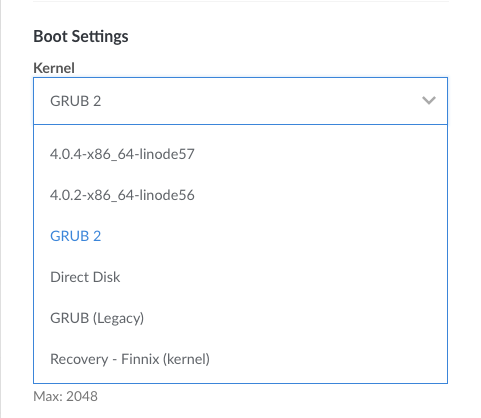
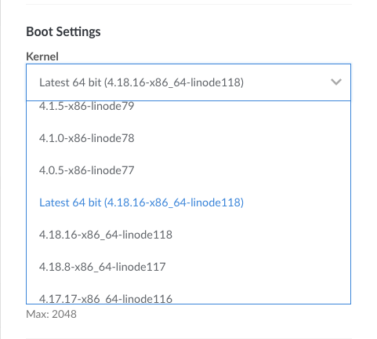
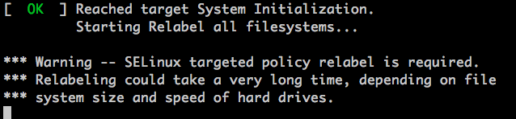
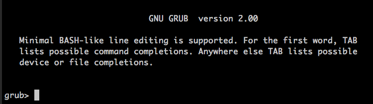

How to Change your Linode's Kernel
Updated by Linode Written by Linode
This guide is about changing your Linode’s kernel to an upstream kernel, a Linode kernel, or a kernel that you compile from source. For information on updating your Linode’s current kernel, check out the How to Update your Linode’s Existing Kernel guide.
Which Kernel Am I Running?
Your Linode is capable of running one of three kinds of kernels:
An upstream kernel that is maintained and provided by your Linux distribution’s authors (this is also referred to as the distribution-supplied kernel).
The Linode kernel. Linode maintains an up-to-date kernel: Linode’s engineering team monitors for new versions of the Linux kernel and then packages them for users shortly after they are available. These kernels are not installed on your filesystem–instead, the Linode Manager supplies them at boot time to your system.
Note
A version history for Linode’s kernel is available here.A kernel that you compile from source.
Most distributions that can be deployed from the Linode Manager boot the upstream kernel by default. CentOS 6, OpenSUSE Leap 42.3, Slackware, and Ubuntu 14.04, and older distributions are exceptions to this rule, and they boot the Linode kernel by default.
This guide demonstrates using the Linode Manager to change which kernel a KVM-based Linode will boot.
Why Use Each Kernel?
The different kinds of kernels you can use offer different benefits:
The upstream kernel may support features not present in the Linode kernel (for example, SELinux). The upstream kernel is easily installed and updated from your distribution’s package management system.
The Linode kernel is quick to update and does not require you to enter any terminal commands: if you’re using the Linode kernel marked as latest, then you just need to reboot in order to update it.
Compiling a kernel can let you use features not available in the upstream or Linode kernels, but it takes longer to compile the kernel from source than to download it from your package manager.
How to Switch your Kernel
Select the Linode from the Dashboard
Click the Settings tab and expand the Advanced Configurations section.
Find your current Configuration, click on the corresponding ellipses (…) menu and select Edit.
Scroll to the Boot Settings section.
Observe the Kernel dropdown menu. Depending on your distribution, this will be set to either
GRUB 2orLatest 64 bit (<kernel version>-x86_64-linode<linode kernel release number>).
To use Linode’s kernel, select
Latest 64 bit (<kernel version>-x86_64-linode)from the Kernel menu. To change to the upstream kernel, or to use a kernel you’ve compiled from source, selectGRUB 2. For more information on custom compiled kernels, review our guides for Debian, Ubuntu, and CentOS.
Click Submit at the bottom of the page and reboot into the new kernel.
Once booted, you can verify the kernel information with
uname:uname -r4.17.15-x86_64-linode115You can switch back to your previous kernel setting at any time by repeating the steps above for the kernel of your choice.
Caveats when Booting under GRUB 2
SELinux
CentOS 7 and Fedora ship with SELinux running in enforcing mode by default. When switching from the Linode kernel to the upstream kernel, SELinux may need to relabel your filesystem at boot. When the relabeling completes, the Linode will shut down. If you have Lassie enabled, the Linode Manager will automatically boot your Linode again following the shut down. If you do not have Lassie enabled, you will need to manually reboot from the Linode Manager.

You can trigger the relabel process by creating an empty /.autorelabel file and then rebooting:
touch /.autorelabel
No Upstream Kernel Installed
If your system does not boot and instead shows a GRUB command line prompt in Lish like shown below, then you need to install the kernel and configure GRUB. This should only be necessary on Linodes which were created before February 2017. If this is the case, switch back to the Linode kernel in your configuration profile, reboot your Linode, and then follow this guide’s instructions for installing the kernel.

Install the Upstream Kernel
NoteThis guide is written for a non-root user. Some commands may require elevated privileges and should be prefixed with
sudo. If you’re not familiar with thesudocommand, visit our Users and Groups guide.All configuration files should be edited with elevated privileges. Remember to include
sudobefore running your text editor.
NoteMost distributions that can be deployed from the Linode Manager boot the upstream kernel by default. CentOS 6, OpenSUSE Leap 42.3, Slackware, and Ubuntu 14.04, and older distributions are exceptions to this rule, and they boot the Linode kernel by default.
Update your package management system:
Arch Linux
pacman -SyuCentOS
yum updateDebian/Ubuntu
apt updateGentoo
emerge -avDuN worldInstall the Linux kernel and GRUB 2. Choose
/dev/sdaif you’re asked which disk to install to during installation. Linode provides the GRUB bootloader, so your system only needs to provide agrub.cfgfile.Arch Linux
pacman -S linux grubCentOS 6
yum install kernel grubCentOS 7
yum install kernel grub2Debian
apt-get install linux-image-amd64 grub2Gentoo
There are two main ways to install Gentoo’s kernel: Manual configuration and using the
genkerneltool. Which you use and how you configure the kernel will depend on your preferences, so see the Gentoo Handbook for instructions.Ubuntu
apt install linux-generic grub2
When the installation finishes, you’ll see the kernel and other components in the /boot directory. For example:
[root@archlinux ~]# ls /boot
grub initramfs-linux-fallback.img initramfs-linux.img vmlinuz-linux
Configure GRUB
After the kernel is installed, you’ll need to configure the serial console and other GRUB settings so you can use Lish and Glish.
Open
/etc/default/grubin a text editor and go to the line beginning withGRUB_CMDLINE_LINUX. Remove the wordquietif present, and addconsole=ttyS0,19200n8 net.ifnames=0. Leave the other entries in the line. For example, on CentOS 7 you should have something similar to:GRUB_CMDLINE_LINUX="crashkernel=auto rhgb console=ttyS0,19200n8 net.ifnames=0"Add or change the options in
/etc/default/grubto match the following snippet. There will be other variables in this file, but the current changes are only focused on these lines.- /etc/default/grub
-
1 2 3 4 5GRUB_TERMINAL=serial GRUB_DISABLE_OS_PROBER=true GRUB_SERIAL_COMMAND="serial --speed=19200 --unit=0 --word=8 --parity=no --stop=1" GRUB_DISABLE_LINUX_UUID=true GRUB_GFXPAYLOAD_LINUX=text
Prepare and update the bootloader:
Arch and Gentoo
grub-mkconfig -o /boot/grub/grub.cfgCentOS
The
.autorelabelfile is necessary to queue the SELinux filesystem relabeling process when rebooting from the Linode kernel to the CentOS kernel.mkdir /boot/grub ln -s /boot/grub2/grub.cfg /boot/grub/grub.cfg grub2-mkconfig -o /boot/grub/grub.cfg touch /.autorelabelDebian and Ubuntu
update-grub
Join our Community
Find answers, ask questions, and help others.
This guide is published under a CC BY-ND 4.0 license.